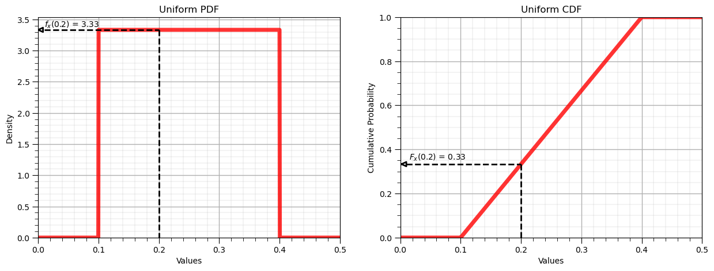
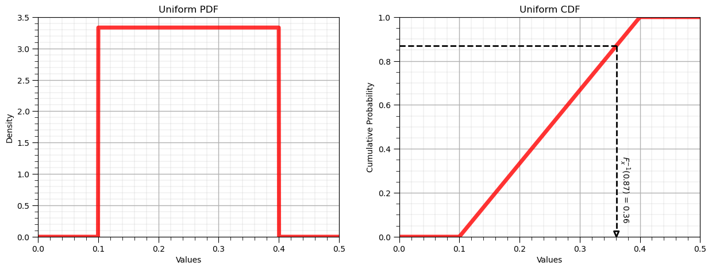
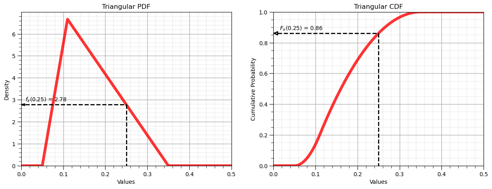
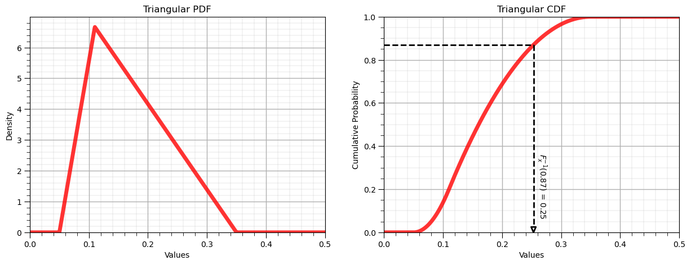
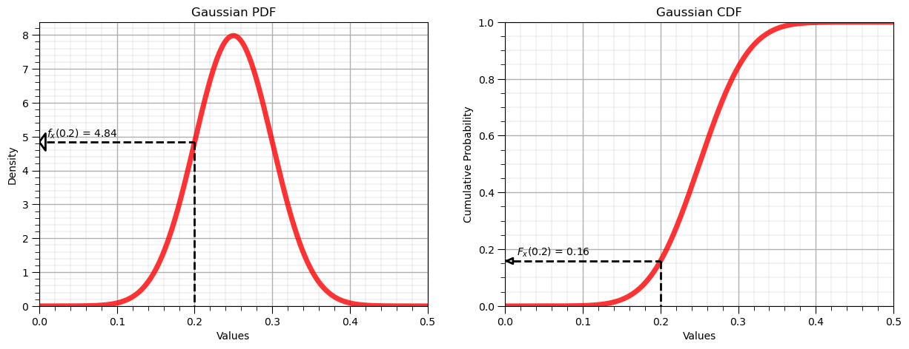
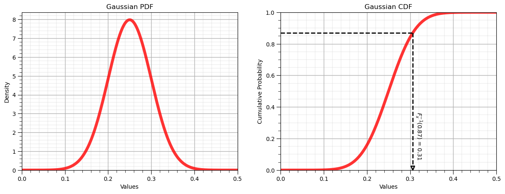
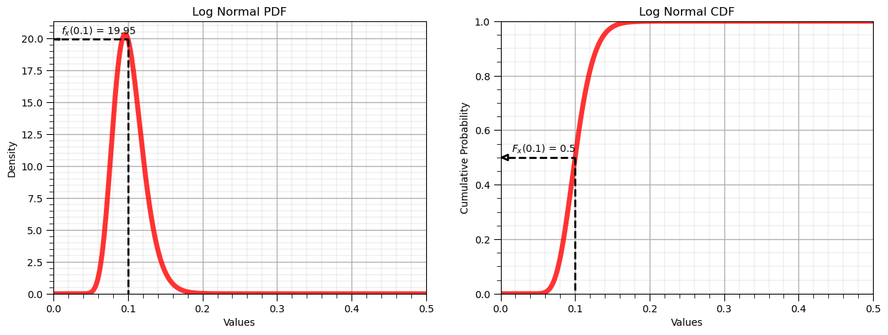
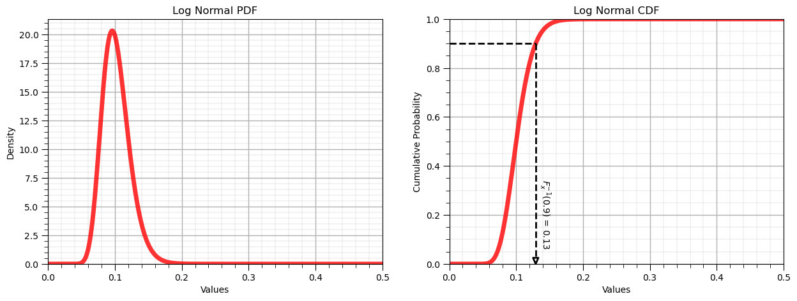

Parametric Distributions#
Michael J. Pyrcz, Professor, The University of Texas at Austin
Twitter | GitHub | Website | GoogleScholar | Geostatistics Book | YouTube | Applied Geostats in Python e-book | Applied Machine Learning in Python e-book | LinkedIn
Chapter of e-book “Applied Geostatistics in Python: a Hands-on Guide with GeostatsPy”.
Cite this e-Book as:
Pyrcz, M.J., 2024, Applied Geostatistics in Python: a Hands-on Guide with GeostatsPy [e-book]. Zenodo. doi:10.5281/zenodo.15169133 
The workflows in this book and more are available here:
Cite the GeostatsPyDemos GitHub Repository as:
Pyrcz, M.J., 2024, GeostatsPyDemos: GeostatsPy Python Package for Spatial Data Analytics and Geostatistics Demonstration Workflows Repository (0.0.1) [Software]. Zenodo. doi:10.5281/zenodo.12667036. GitHub Repository: GeostatsGuy/GeostatsPyDemos 
By Michael J. Pyrcz
© Copyright 2024.
This chapter is a tutorial for / demonstration of Parametric Distributions.
YouTube Lecture: check out my lectures on:
This lecture is part of my Data Analytics and Geostatistics Course on YouTube with linked well-documented Python workflows and interactive dashboards. My goal is to share accessible, actionable, and repeatable educational content. If you want to know about my motivation, check out Michael’s Story.
Motivation#
Parametric distributions may be relate to an underlying theory, for example,
Gaussian / Normal Distribution:
the normal distribution is the limit distribution for the central limit theorem
Chi-squared Distribution:
for square of Gaussian distributed random variables
Weibull (w-ā-bull) distribution:
in reliability theory, \(𝒇_𝒙 (𝒙)\) probability of failure over time, 𝒙
If we know how samples should be distributed, then we can use that distribution in confidence intervals and hypothesis testing.
Other important aspects of parametric distributions and examples,
Known, useful statistical properties - if Gaussian distributed all marginal and conditionals are Gaussian
Commonly occur in nature - central limit theorem
Encompass a range of assumptions - uniform distribution is the maximum uncertainty distribution
Here’s a demonstration of making and general use of parametric distributions in Python. This demonstration is part of the resources that I include for my courses in Spatial / Subsurface Data Analytics at the Cockrell School of Engineering at the University of Texas at Austin.
We cover the following distributions:
Uniform
Triangular
Gaussian
Log Normal
We will demonstrate:
distribution parameters
forward and inverse operators
summary statistics
Importing Packages#
We will need some standard packages. These should have been installed with Anaconda 3.
supress_warnings = True
import numpy as np # ndarrys for gridded data
import pandas as pd # DataFrames for tabular data
import os # set working directory, run executables
import matplotlib.pyplot as plt # for plotting
from matplotlib.ticker import (MultipleLocator, AutoMinorLocator) # control of axes ticks
from scipy import stats # summary statistics
import math # trigonometry etc.
import scipy.signal as signal # kernel for moving window calculation
import random # for randon numbers
import seaborn as sns # for matrix scatter plots
from scipy import linalg # for linear regression
from sklearn import preprocessing
import geostatspy.GSLIB as GSLIB
plt.rc('axes', axisbelow=True) # grid behind plotting elements
if supress_warnings == True:
import warnings # supress any warnings for this demonstration
warnings.filterwarnings('ignore')
If you get a package import error, you may have to first install some of these packages. This can usually be accomplished by opening up a command window on Windows and then typing ‘python -m pip install [package-name]’. More assistance is available with the respective package docs.
Declare functions#
Here’s a convenience function to add major and minor gridlines to our plots.
def add_grid():
plt.gca().grid(True, which='major',linewidth = 1.0); plt.gca().grid(True, which='minor',linewidth = 0.2) # add y grids
plt.gca().tick_params(which='major',length=7); plt.gca().tick_params(which='minor', length=4)
plt.gca().xaxis.set_minor_locator(AutoMinorLocator()); plt.gca().yaxis.set_minor_locator(AutoMinorLocator()) # turn on minor ticks
Set the Working Directory#
I always like to do this so I don’t lose files and to simplify subsequent read and writes (avoid including the full address each time).
#os.chdir("c:/PGE383") # set the working directory
Uniform Distribution#
Let’s start with the most simple distribution.
by default a random number is uniform distributed
this ensures that enough random samples (Monte Carlo simulations) will reproduce the distribution
\begin{equation} x_{\alpha}^{s} = F^{-1}x(p{\alpha}), \quad X^{s} \sim F_X \end{equation}
The continuous uniform distribution PDF is,
and the continuous uniform distribution CDF is,
To demonstrate the parameters I coded an interactive Python dashboard Uniform PDF and CDF.
Let’s demonstrate the use of the command:
scipy.stats.uniform.rvs(size=n, loc = low, scale = interval, random_state = seed)
Where:
size is the number of samples
loc is the minimum value
scale is the range, maximum value minus the minimum value
random_state is the random number seed
We will observe the convergence of the samples to a uniform distribution as the number of samples becomes large.
We will make a compact set of code by looping over all the cases of number of samples
we store the number of samples cases in the list called ns
we store the samples as a list of lists, called X_uniform
from scipy.stats import uniform
low = 0.10; interval = 0.30; ns = [1e1,1e2,1e3,1e4,1e5,1e6]; seed = 13; X_uniform = []
index = 0
for n in ns:
X_uniform.append(uniform.rvs(size=int(ns[index]), loc = low, scale = interval, random_state=seed).tolist())
plt.subplot(2,3,index+1)
GSLIB.hist_st(X_uniform[index],0.0,0.5,log=False,cumul = False,bins=20,weights = None,xlabel='Values',title='Distribution, N = ' + str(int(ns[index])))
add_grid()
index = index + 1
plt.subplots_adjust(left=0.0, bottom=0.0, right=3.0, top=2.1, wspace=0.2, hspace=0.3)
We can observe that by drawing more Monte Carlo simulations, we more closely approximate the original uniform parametric distribution.
Forward Distribution#
Let’s demonstrate the forward operator. We can take any value and calculate the associated:
density (probability density function)
cumulative probability
The transform for the probability density function is:
\begin{equation} p = f_x(x) \end{equation}
where \(f_x\) is the PDF and \(p\) is the density for value, \(x\).
and for the cumulative distribution function is:
\begin{equation} P = F_x(x) \end{equation}
where \(F_x\) is the CDF and \(P\) is the cumulative probability for value, \(x\). Let’s use this to first plot the entire PDF and CDF.
x_values = np.linspace(0.0,0.5,1000) # ndarray with regularly space values of the feature
p_values = uniform.pdf(x_values, loc = low, scale = interval) # f_x(x), densities from PDF
P_values = uniform.cdf(x_values, loc = low, scale = interval) # F_x(x), cumulative probabilities from CDF
plt.subplot(1,2,1)
plt.plot(x_values, p_values,'r-', lw=5, alpha=0.8, label='uniform PDF'); plt.title('Uniform PDF'); plt.xlabel('Values'); plt.ylabel('Density')
plt.xlim([0.0,0.5]); plt.ylim([0,None]); add_grid()
plt.subplot(1,2,2)
plt.plot(x_values, P_values,'r-', lw=5, alpha=0.8, label='uniform CDF'); plt.title('Uniform CDF'); plt.xlabel('Values'); plt.ylabel('Cumulative Probability')
plt.xlim([0.0,0.5]); plt.ylim([0,1]); add_grid()
plt.subplots_adjust(left=0.0, bottom=0.0, right=1.8, top=0.8, wspace=0.2, hspace=0.3); plt.show()
Forward Uniform Distribution, \(f_x(x)\) and \(F_x(x)\)#
Let’s now demonstrate the forward operator for the uniform distribution:
from IPython.display import display, Markdown
x = 0.2 # a specific value of the feature to evaluate
p = uniform.pdf(x, loc = low, scale = interval) # f_x(x), density of x from PDF
P = uniform.cdf(x, loc = low, scale = interval) # F_x(x), cumulative probability of x from CDF
display(Markdown(fr'Forward of Uniform PDF: $f_x({x}) = {np.round(p,2)}$, use scipy.stats.[my_distribution].pdf()'))
display(Markdown(fr'Forward of Uniform CDF: $F_x({x}) = {np.round(P,2)}$, use scipy.stats.[my_distribution].cdf()'))
plt.subplot(1,2,1)
plt.plot(x_values, p_values,'r-', lw=5, alpha=0.8, label='uniform PDF'); plt.title('Uniform PDF'); plt.xlabel('Values'); plt.ylabel('Density')
plt.plot([0.01,x],[p,p],c='black',lw=2,ls='--'); plt.plot([x,x],[p,0],c='black',lw=2,ls='--')
plt.plot([0,0.008,0.008,0],[p,p-0.035,p+0.035,p],c='black',lw=2)
plt.annotate(r'$f_x($' + str(np.round(x,2)) + '$)$ = ' + str(np.round(p,2)),xy=[0.01,p+0.04])
plt.xlim([0.0,0.5]); plt.ylim(0,None); add_grid()
plt.subplot(1,2,2)
plt.plot(x_values, P_values,'r-', lw=5, alpha=0.8, label='uniform CDF'); plt.title('Uniform CDF'); plt.xlabel('Values'); plt.ylabel('Cumulative Probability')
plt.plot([0.01,x],[P,P],c='black',lw=2,ls='--'); plt.plot([x,x],[P,0],c='black',lw=2,ls='--')
plt.plot([0.002,0.01,0.01,0.002],[P,P-0.01,P+0.01,P],c='black',lw=2)
plt.annotate(r'$F_x($' + str(np.round(x,2)) + '$)$ = ' + str(np.round(P,2)),xy=[0.015,P+0.02])
plt.xlim([0.0,0.5]); plt.ylim([0,1]); add_grid()
plt.subplots_adjust(left=0.0, bottom=0.0, right=1.8, top=0.8, wspace=0.2, hspace=0.3); plt.show()
Forward of Uniform PDF: $f_x(0.2) = 3.33$, use scipy.stats.[my_distribution].pdf()
Forward of Uniform CDF: $F_x(0.2) = 0.33$, use scipy.stats.[my_distribution].cdf()
Inverse Distribution, \(F^{-1}_x(x)\)#
Let’s now demonstrate the reverse operator for the uniform distribution:
P = 0.87 # a specific cumulative probablity
x = uniform.ppf(P, loc = low, scale = interval) # F^{-1}_x(x), percentile in x of P from CDF
display(Markdown(fr'Inverse of Uniform CDF: $F^{{{-1}}}_x({P}) = {np.round(x,2)}$, use scipy.stats.[my_distribution].ppf()'))
plt.subplot(1,2,1)
plt.plot(x_values, p_values,'r-', lw=5, alpha=0.8, label='uniform PDF'); plt.title('Uniform PDF'); plt.xlabel('Values'); plt.ylabel('Density')
plt.xlim([0.0,0.5]); plt.ylim(0,None); add_grid()
plt.subplot(1,2,2)
plt.plot(x_values, P_values,'r-', lw=5, alpha=0.8, label='uniform CDF'); plt.title('Uniform CDF'); plt.xlabel('Values'); plt.ylabel('Cumulative Probability')
plt.plot([0.00,x],[P,P],c='black',lw=2,ls='--'); plt.plot([x,x],[P,0.03],c='black',lw=2,ls='--')
plt.plot([x,x-0.004,x+0.004,x],[0,0.025,0.025,0],c='black',lw=2)
plt.annotate(r'$F^{-1}_x($' + str(np.round(P,2)) + '$)$ = ' + str(np.round(x,2)),xy=[x+0.003,0.08],rotation=270.0)
plt.xlim([0.0,0.5]); plt.ylim([0,1]); add_grid()
plt.subplots_adjust(left=0.0, bottom=0.0, right=1.8, top=0.8, wspace=0.2, hspace=0.3); plt.show()
Inverse of Uniform CDF: $F^{-1}_x(0.87) = 0.36$, use scipy.stats.[my_distribution].ppf()
Summary Statistics#
We also have a couple of convience member functions to return the statistics from the parametric distribution:
mean
median
mode
variance
standard deviation
Let’s demonstrate a few of these methods.
uniform.stats(loc = low, scale = interval, moments = 'mvsk')
returns a tuple with the mean, variance, skew and kurtosis (centered 1st, 2nd, 3rd and 4th moments)
print('Stats: mean, variance, skew and kurtosis = ' + str(uniform.stats(loc = low, scale = interval, moments = 'mvsk')))
Stats: mean, variance, skew and kurtosis = (array(0.25), array(0.0075), array(0.), array(-1.2))
We can confirm this by calculating the centered variance (regular variance) with this member function:
uniform.var(loc = low, scale = interval)
print('The variance is ' + str(round(uniform.var(loc = low, scale = interval),4)) + '.')
The variance is 0.0075.
We can also directly calculate the:
standard deviation - std
mean - mean
median - median
We can also calculate order of a non-centered moment. The moment method allows us to calculate an non-centered moment of any order. Try this out.
m_order = 4
print('The ' + str(m_order) + 'th order non-centered moment is ' + str(np.round(uniform.moment(order = m_order, loc = low, scale = interval),2)))
The 4th order non-centered moment is 0.01
Symmetric Interval#
We can also get the symmetric interval (e.g. prediction or confidence intervals) for any alpha level.
Note the program mislabels the value as alpha, it is actually the significance level (1 - alpha)
alpha = 0.05
print('The interval at alpha level ' + str(round(alpha,3)) + ' is ' + str(np.round(uniform.interval(confidence = 1-alpha,loc = low,scale = interval),2)))
The interval at alpha level 0.05 is [0.11 0.39]
Triangular Distribution#
The triangular distribution is commonly used when the range and mode is known. It can be be used to specify symmetric and asymmetric distributions.
The continuous triangular distribution PDF is,
and the continuous triangular distribution CDF is,
while all assume \(a \le x \le b\).
The great thing about parametric distributions in Python with SciPy is that the above member functions are the same,
we can plug and play other parametric distributions and repeat the above.
This time we will make it much more compact!
we will import the triangular distribution as my_dist and call the same functions as before
we need a new parameter, the distribution mode (c parameter)
scipy.stats.triang.pdf(size=n, loc = low, c = mode, scale = interval)
Where:
loc is the minimum value
mode is the mode of the triangular distribution
scale is the range, maximum value minus the minimum value
P = 0.87 # a specific cumulative probablity
from scipy.stats import triang as my_dist # import traingular dist as my_dist
dist_type = 'Triangular' # give the name of the distribution for labels
low = 0.05; mode = 0.20; c = 0.10 # given the distribution parameters
alpha = 0.05
x_values = np.linspace(0.0,0.5,1000) # get an array of x values
p_values = my_dist.pdf(x_values, loc = low, c = mode, scale = interval) # calculate density for each x value
P_values = my_dist.cdf(x_values, loc = low, c = mode, scale = interval) # calculate cumulative probablity for each x value
plt.subplot(1,2,1) # plot the resulting PDF
plt.plot(x_values, p_values,'r-', lw=5, alpha=0.8); plt.title(str(dist_type) + ' PDF, $f_x(x)$'); plt.xlabel('Values'); plt.ylabel('Density')
plt.xlim([0.0,0.5]); plt.ylim([0,None]); add_grid()
plt.subplot(1,2,2) # plot the resulting CDF
plt.plot(x_values, P_values,'r-', lw=5, alpha=0.8); plt.title(str(dist_type) + ' CDF, $F_x(x)$'); plt.xlabel('Values'); plt.ylabel('Cumulative Probability')
plt.xlim([0.0,0.5]); plt.ylim([0,1.0]); add_grid()
# p_values_inv = np.linspace(0.00001,0.99999,100) # get an array of p-values
# x_values_inv = my_dist.ppf(p_values, loc = low, c = mode, scale = interval) # apply inverse to get x values from p-values
# plt.subplot(1,3,3)
# plt.plot(x_values, p_values,'r-', lw=5, alpha=0.8, label='uniform pdf')
# plt.xlim([0.0,0.5]); plt.ylim([0,None]); add_grid()
#plt.subplots_adjust(left=0.0, bottom=0.0, right=3.0, top=1.1, wspace=0.2, hspace=0.3); plt.title('Sampling Inverse the ' + str(dist_type) + ' CDF, $F^{-1}_x(x)$'); plt.xlabel('Values'); plt.ylabel('Cumulative Probability')
plt.subplots_adjust(left=0.0, bottom=0.0, right=1.8, top=0.8, wspace=0.2, hspace=0.3); plt.show()
print('The mean is ' + str(round(my_dist.mean(loc = low,c = mode, scale = interval),4)) + '.') # calculate stats and symmetric interval
print('The variance is ' + str(round(my_dist.var(loc = low, c = mode, scale = interval),4)) + '.')
print('The interval at an alpha level of ' + str(round(alpha,3)) + ' is ' + str(np.round(my_dist.interval(confidence = 1-alpha,loc = low,c = mode,scale = interval),2)))
The mean is 0.17.
The variance is 0.0042.
The interval at an alpha level of 0.05 is [0.07 0.31]
The missing lower tail for the inverse is due to any value less than 0.05 having 0.0 cumulative probability.
Forward Triangular Distribution, \(f_x(x)\) and \(F_x(x)\)#
Let’s now demonstrate the forward operator for the triangular distribution:
x = 0.25 # a specific value of the feature to evaluate
p = my_dist.pdf(x, loc = low, c = mode, scale = interval) # f_x(x), density of x from PDF
P = my_dist.cdf(x, loc = low, c = mode, scale = interval) # F_x(x), cumulative probability of x from CDF
display(Markdown(fr'Forward of Triangular PDF: $f_x({x}) = {np.round(p,2)}$, use scipy.stats.[my_distribution].pdf()'))
display(Markdown(fr'Forward of Triangular CDF: $F_x({x}) = {np.round(P,2)}$, use scipy.stats.[my_distribution].cdf()'))
plt.subplot(1,2,1)
plt.plot(x_values, p_values,'r-', lw=5, alpha=0.8, label=dist_type + ' PDF'); plt.title(dist_type + ' PDF'); plt.xlabel('Values'); plt.ylabel('Density')
plt.plot([0.01,x],[p,p],c='black',lw=2,ls='--'); plt.plot([x,x],[p,0],c='black',lw=2,ls='--')
plt.plot([0,0.008,0.008,0],[p,p-0.035,p+0.035,p],c='black',lw=2)
plt.annotate(r'$f_x($' + str(np.round(x,2)) + '$)$ = ' + str(np.round(p,2)),xy=[0.01,p+0.15])
plt.xlim([0.0,0.5]); plt.ylim(0,None); add_grid()
plt.subplot(1,2,2)
plt.plot(x_values, P_values,'r-', lw=5, alpha=0.8, label=dist_type + ' CDF'); plt.title(dist_type + ' CDF'); plt.xlabel('Values'); plt.ylabel('Cumulative Probability')
plt.plot([0.01,x],[P,P],c='black',lw=2,ls='--'); plt.plot([x,x],[P,0],c='black',lw=2,ls='--')
plt.plot([0.002,0.01,0.01,0.002],[P,P-0.01,P+0.01,P],c='black',lw=2)
plt.annotate(r'$F_x($' + str(np.round(x,2)) + '$)$ = ' + str(np.round(P,2)),xy=[0.015,P+0.02])
plt.xlim([0.0,0.5]); plt.ylim([0,1]); add_grid()
plt.subplots_adjust(left=0.0, bottom=0.0, right=1.8, top=0.8, wspace=0.2, hspace=0.3); plt.show()
Forward of Triangular PDF: $f_x(0.25) = 2.78$, use scipy.stats.[my_distribution].pdf()
Forward of Triangular CDF: $F_x(0.25) = 0.86$, use scipy.stats.[my_distribution].cdf()
Inverse Distribution, \(F^{-1}_x(x)\)#
Let’s now demonstrate the reverse operator for the triangular distribution:
P = 0.87 # a specific cumulative probablity
x = my_dist.ppf(P, loc = low, c = mode, scale = interval) # F^{-1}_x(x), percentile in x of P from CDF
display(Markdown(fr'Inverse of Triangular CDF: $F^{{{-1}}}_x({P}) = {np.round(x,2)}$, use scipy.stats.[my_distribution].ppf()'))
plt.subplot(1,2,1)
plt.plot(x_values, p_values,'r-', lw=5, alpha=0.8, label='uniform PDF'); plt.title(dist_type + ' PDF'); plt.xlabel('Values'); plt.ylabel('Density')
plt.xlim([0.0,0.5]); plt.ylim(0,None); add_grid()
plt.subplot(1,2,2)
plt.plot(x_values, P_values,'r-', lw=5, alpha=0.8, label='uniform CDF'); plt.title(dist_type + ' CDF'); plt.xlabel('Values'); plt.ylabel('Cumulative Probability')
plt.plot([0.00,x],[P,P],c='black',lw=2,ls='--'); plt.plot([x,x],[P,0.03],c='black',lw=2,ls='--')
plt.plot([x,x-0.004,x+0.004,x],[0,0.025,0.025,0],c='black',lw=2)
plt.annotate(r'$F^{-1}_x($' + str(np.round(P,2)) + '$)$ = ' + str(np.round(x,2)),xy=[x+0.003,0.08],rotation=270.0)
plt.xlim([0.0,0.5]); plt.ylim([0,1]); add_grid()
plt.subplots_adjust(left=0.0, bottom=0.0, right=1.8, top=0.8, wspace=0.2, hspace=0.3); plt.show()
Inverse of Triangular CDF: $F^{-1}_x(0.87) = 0.25$, use scipy.stats.[my_distribution].ppf()
Gaussian Distribution#
Let’s now use the Gaussian parametric distribution.
we will need the parameters mean and the variance
The continuous Gaussian distribution PDF is,
and the continuous Gaussian distribution CDF is,
To demonstrate the parameters I coded an interactive Python dashboard Uniform PDF and CDF.
We will apply the forward and reverse operations and calculate the summary statistics.
scipy.stats.norm.pdf(size=n, loc = mean, scale = standard deviation)
Where:
loc is the mean, arithmetic average
scale is the standard deviation
P = 0.87 # a specific cumulative probablity
from scipy.stats import norm as my_dist # import traingular dist as my_dist
dist_type = 'Gaussian' # give the name of the distribution for labels
mean = 0.25; stdev = 0.05 # given the distribution parameters
alpha = 0.05
x_values = np.linspace(0.0,0.5,1000) # get an array of x values
p_values = my_dist.pdf(x_values, loc = mean, scale = stdev) # calculate density for each x value
P_values = my_dist.cdf(x_values, loc = mean, scale = stdev) # calculate cumulative probablity for each x value
plt.subplot(1,2,1) # plot the resulting PDF
plt.plot(x_values, p_values,'r-', lw=5, alpha=0.8); plt.title(str(dist_type) + ' PDF, $f_x(x)$'); plt.xlabel('Values'); plt.ylabel('Density')
plt.xlim([0.0,0.5]); plt.ylim([0,None]); add_grid()
plt.subplot(1,2,2) # plot the resulting CDF
plt.plot(x_values, P_values,'r-', lw=5, alpha=0.8); plt.title(str(dist_type) + ' CDF, $F_x(x)$'); plt.xlabel('Values'); plt.ylabel('Cumulative Probability')
plt.xlim([0.0,0.5]); plt.ylim([0,1.0]); add_grid()
# p_values = np.linspace(0.00001,0.99999,100) # get an array of p-values
# x_values = my_dist.ppf(p_values, loc = mean, scale = stdev) # apply inverse to get x values from p-values
# plt.subplot(1,3,3)
# plt.plot(x_values, p_values,'r-', lw=5, alpha=0.8, label='uniform pdf')
# plt.xlim([0.0,0.3])
# plt.subplots_adjust(left=0.0, bottom=0.0, right=2.8, top=0.8, wspace=0.2, hspace=0.3); plt.title('Sampling Inverse the ' + str(dist_type) + ' CDF, $F^{-1}_x(x)$'); plt.xlabel('Values'); plt.ylabel('Cumulative Probability')
plt.subplots_adjust(left=0.0, bottom=0.0, right=1.8, top=0.8, wspace=0.2, hspace=0.3); plt.show()
print('The mean is ' + str(round(my_dist.mean(loc = mean, scale = stdev),4)) + '.') # calculate stats and symmetric interval
print('The variance is ' + str(round(my_dist.var(loc = mean, scale = stdev),4)) + '.')
print('The interval at an alpha level of ' + str(round(alpha,3)) + ' is ' + str(np.round(my_dist.interval(confidence = 1-alpha,loc = mean,scale = stdev),2)))
The mean is 0.25.
The variance is 0.0025.
The interval at an alpha level of 0.05 is [0.15 0.35]
Forward Gaussian Distribution, \(f_x(x)\) and \(F_x(x)\)#
Let’s now demonstrate the forward operator for the Gaussian distribution:
from scipy.stats import norm
x = 0.2
p = norm.pdf(x, loc = mean, scale = stdev)
P = norm.cdf(x, loc = mean, scale = stdev)
display(Markdown(fr'Forward of Gaussian/Normal PDF: $f_x({x}) = {np.round(p,2)}$, use scipy.stats.[my_distribution].pdf()'))
display(Markdown(fr'Forward of Gaussian/Normal CDF: $F_x({x}) = {np.round(P,2)}$, use scipy.stats.[my_distribution].cdf()'))
plt.subplot(1,2,1)
plt.plot(x_values, p_values,'r-', lw=5, alpha=0.8, label=dist_type + ' PDF'); plt.title(dist_type + ' PDF'); plt.xlabel('Values'); plt.ylabel('Density')
plt.plot([0.01,x],[p,p],c='black',lw=2,ls='--'); plt.plot([x,x],[p,0],c='black',lw=2,ls='--')
plt.plot([0,0.008,0.008,0],[p,p-0.25,p+0.25,p],c='black',lw=2)
plt.annotate(r'$f_x($' + str(np.round(x,2)) + '$)$ = ' + str(np.round(p,2)),xy=[0.01,p+0.15])
plt.xlim([0.0,0.5]); plt.ylim(0,None); add_grid()
plt.subplot(1,2,2)
plt.plot(x_values, P_values,'r-', lw=5, alpha=0.8, label=dist_type + ' CDF'); plt.title(dist_type + ' CDF'); plt.xlabel('Values'); plt.ylabel('Cumulative Probability')
plt.plot([0.01,x],[P,P],c='black',lw=2,ls='--'); plt.plot([x,x],[P,0],c='black',lw=2,ls='--')
plt.plot([0.002,0.01,0.01,0.002],[P,P-0.01,P+0.01,P],c='black',lw=2)
plt.annotate(r'$F_x($' + str(np.round(x,2)) + '$)$ = ' + str(np.round(P,2)),xy=[0.015,P+0.02])
plt.xlim([0.0,0.5]); plt.ylim([0,1]); add_grid()
plt.subplots_adjust(left=0.0, bottom=0.0, right=1.8, top=0.8, wspace=0.2, hspace=0.3); plt.show()
Forward of Gaussian/Normal PDF: $f_x(0.2) = 4.84$, use scipy.stats.[my_distribution].pdf()
Forward of Gaussian/Normal CDF: $F_x(0.2) = 0.16$, use scipy.stats.[my_distribution].cdf()
Inverse Gaussian Distribution, \(F^{-1}_x(x)\)#
Let’s now demonstrate the reverse operator for the uniform distribution:
P = 0.87
x = norm.ppf(P, loc = mean, scale = stdev)
display(Markdown(fr'Inverse of Uniform CDF: $F^{{{-1}}}_x({P}) = {np.round(x,2)}$, use scipy.stats.[my_distribution].ppf()'))
plt.subplot(1,2,1)
plt.plot(x_values, p_values,'r-', lw=5, alpha=0.8, label='uniform PDF'); plt.title(dist_type + ' PDF'); plt.xlabel('Values'); plt.ylabel('Density')
plt.xlim([0.0,0.5]); plt.ylim(0,None); add_grid()
plt.subplot(1,2,2)
plt.plot(x_values, P_values,'r-', lw=5, alpha=0.8, label='uniform CDF'); plt.title(dist_type + ' CDF'); plt.xlabel('Values'); plt.ylabel('Cumulative Probability')
plt.plot([0.00,x],[P,P],c='black',lw=2,ls='--'); plt.plot([x,x],[P,0.03],c='black',lw=2,ls='--')
plt.plot([x,x-0.004,x+0.004,x],[0,0.025,0.025,0],c='black',lw=2)
plt.annotate(r'$F^{-1}_x($' + str(np.round(P,2)) + '$)$ = ' + str(np.round(x,2)),xy=[x+0.003,0.08],rotation=270.0)
plt.xlim([0.0,0.5]); plt.ylim([0,1]); add_grid()
plt.subplots_adjust(left=0.0, bottom=0.0, right=1.8, top=0.8, wspace=0.2, hspace=0.3); plt.show()
Inverse of Uniform CDF: $F^{-1}_x(0.87) = 0.31$, use scipy.stats.[my_distribution].ppf()
Lognormal Distribution#
Now let’s check out the lognormal distribution.
We need the parameters \(\mu\) and \(\sigma\)
The continuous lognormal distribution PDF is,
and the continuous lognormal distribution CDF is,
To demonstrate the parameters I coded an interactive Python dashboard Uniform PDF and CDF.
scipy.stats.lognorm.pdf(size=n, s = sigma, scale = exp{mu})
Where:
loc is the mean, arithmetic average
scale is the standard deviation
from scipy.stats import lognorm as my_dist # import traingular dist as my_dist
dist_type = 'Log Normal' # give the name of the distribution for labels
mu = np.log(0.10); sigma = 0.2 # given the distribution parameters
alpha = 0.05
x_values = np.linspace(0.0,0.5,1000) # get an array of x values
p_values = my_dist.pdf(x_values, s = sigma, scale = np.exp(mu)) # calculate density for each x value
P_values = my_dist.cdf(x_values, s = sigma, scale = np.exp(mu)) # calculate cumulative probablity for each x value
plt.subplot(1,2,1) # plot the resulting PDF
plt.plot(x_values, p_values,'r-', lw=5, alpha=0.8); plt.title('Sampling the ' + str(dist_type) + ' PDF, $f_x(x)$'); plt.xlabel('Values'); plt.ylabel('Density')
plt.xlim([0.0,0.5]); plt.ylim([0,None]); add_grid()
plt.subplot(1,2,2) # plot the resulting CDF
plt.plot(x_values, P_values,'r-', lw=5, alpha=0.8); plt.title('Sampling the ' + str(dist_type) + ' CDF, $F_x(x)$'); plt.xlabel('Values'); plt.ylabel('Cumulative Probability')
plt.xlim([0.0,0.5]); plt.ylim([0,1.0]); add_grid()
# p_values = np.linspace(0.00001,0.99999,100) # get an array of p-values
# x_values = my_dist.ppf(p_values, s = sigma, scale = np.exp(mu)) # apply inverse to get x values from p-values
# plt.subplot(1,3,3)
# plt.plot(x_values, p_values,'r-', lw=5, alpha=0.8, label='uniform pdf')
# plt.xlim([0.0,0.3])
# plt.subplots_adjust(left=0.0, bottom=0.0, right=2.8, top=0.8, wspace=0.2, hspace=0.3); plt.title('Sampling the Inverse the ' + str(dist_type) + ' CDF, $F^{-1}_x(x)$'); plt.xlabel('Values'); plt.ylabel('Cumulative Probability')
plt.subplots_adjust(left=0.0, bottom=0.0, right=1.8, top=0.8, wspace=0.2, hspace=0.3); plt.show()
print('The mean is ' + str(round(my_dist.mean(s = sigma, scale = np.exp(mu)),4)) + '.') # calculate stats and symmetric interval
print('The variance is ' + str(round(my_dist.var(s = sigma, scale = np.exp(mu)),4)) + '.')
print('The interval at alpha level ' + str(round(alpha,3)) + ' is ' + str(np.round(my_dist.interval(confidence = 1-alpha,s = sigma, scale = np.exp(mu)),2)))
The mean is 0.102.
The variance is 0.0004.
The interval at alpha level 0.05 is [0.07 0.15]
Forward Log Normal Distribution, \(f_x(x)\) and \(F_x(x)\)#
Let’s now demonstrate the forward operator for the Gaussian distribution:
from scipy.stats import lognorm
x = 0.1
p = lognorm.pdf(x, s = sigma, scale = np.exp(mu))
P = lognorm.cdf(x, s = sigma, scale = np.exp(mu))
display(Markdown(fr'Forward of Log Normal PDF: $f_x({x}) = {np.round(p,2)}$, use scipy.stats.[my_distribution].pdf()'))
display(Markdown(fr'Forward of Log Normal CDF: $F_x({x}) = {np.round(P,2)}$, use scipy.stats.[my_distribution].cdf()'))
plt.subplot(1,2,1)
plt.plot(x_values, p_values,'r-', lw=5, alpha=0.8, label=dist_type + ' PDF'); plt.title(dist_type + ' PDF'); plt.xlabel('Values'); plt.ylabel('Density')
plt.plot([0.01,x],[p,p],c='black',lw=2,ls='--'); plt.plot([x,x],[p,0],c='black',lw=2,ls='--')
plt.plot([0,0.008,0.008,0],[p,p-0.035,p+0.035,p],c='black',lw=2)
plt.annotate(r'$f_x($' + str(np.round(x,2)) + '$)$ = ' + str(np.round(p,2)),xy=[0.01,p+0.4])
plt.xlim([0.0,0.5]); plt.ylim(0,None); add_grid()
plt.subplot(1,2,2)
plt.plot(x_values, P_values,'r-', lw=5, alpha=0.8, label=dist_type + ' CDF'); plt.title(dist_type + ' CDF'); plt.xlabel('Values'); plt.ylabel('Cumulative Probability')
plt.plot([0.01,x],[P,P],c='black',lw=2,ls='--'); plt.plot([x,x],[P,0],c='black',lw=2,ls='--')
plt.plot([0.002,0.01,0.01,0.002],[P,P-0.01,P+0.01,P],c='black',lw=2)
plt.annotate(r'$F_x($' + str(np.round(x,2)) + '$)$ = ' + str(np.round(P,2)),xy=[0.015,P+0.02])
plt.xlim([0.0,0.5]); plt.ylim([0,1]); add_grid()
plt.subplots_adjust(left=0.0, bottom=0.0, right=1.8, top=0.8, wspace=0.2, hspace=0.3); plt.show()
Forward of Log Normal PDF: $f_x(0.1) = 19.95$, use scipy.stats.[my_distribution].pdf()
Forward of Log Normal CDF: $F_x(0.1) = 0.5$, use scipy.stats.[my_distribution].cdf()
Inverse Lognormal Distribution, \(F^{-1}_x(x)\)#
Let’s know demonstrate the reverse operator for the uniform distribution:
P = 0.90
x = lognorm.ppf(P, s = sigma, scale = np.exp(mu))
display(Markdown(fr'Inverse of Log Normal CDF: $F^{{{-1}}}_x({P}) = {np.round(x,2)}$, use scipy.stats.[my_distribution].ppf()'))
plt.subplot(1,2,1)
plt.plot(x_values, p_values,'r-', lw=5, alpha=0.8, label=dist_type + ' PDF'); plt.title(dist_type + ' PDF'); plt.xlabel('Values'); plt.ylabel('Density')
plt.xlim([0.0,0.5]); plt.ylim(0,None); add_grid()
plt.subplot(1,2,2)
plt.plot(x_values, P_values,'r-', lw=5, alpha=0.8, label=dist_type + ' CDF'); plt.title(dist_type + ' CDF'); plt.xlabel('Values'); plt.ylabel('Cumulative Probability')
plt.plot([0.00,x],[P,P],c='black',lw=2,ls='--'); plt.plot([x,x],[P,0.03],c='black',lw=2,ls='--')
plt.plot([x,x-0.004,x+0.004,x],[0,0.025,0.025,0],c='black',lw=2)
plt.annotate(r'$F^{-1}_x($' + str(np.round(P,2)) + '$)$ = ' + str(np.round(x,2)),xy=[x+0.003,0.08],rotation=270.0)
plt.xlim([0.0,0.5]); plt.ylim([0,1]); add_grid()
plt.subplots_adjust(left=0.0, bottom=0.0, right=1.8, top=0.8, wspace=0.2, hspace=0.3); plt.show()
Inverse of Log Normal CDF: $F^{-1}_x(0.9) = 0.13$, use scipy.stats.[my_distribution].ppf()
About the Author#

Michael Pyrcz is a professor in the Cockrell School of Engineering, and the Jackson School of Geosciences, at The University of Texas at Austin, where he researches and teaches subsurface, spatial data analytics, geostatistics, and machine learning. Michael is also,
the principal investigator of the Energy Analytics freshmen research initiative and a core faculty in the Machine Learn Laboratory in the College of Natural Sciences, The University of Texas at Austin
an associate editor for Computers and Geosciences, and a board member for Mathematical Geosciences, the International Association for Mathematical Geosciences.
Michael has written over 70 peer-reviewed publications, a Python package for spatial data analytics, co-authored a textbook on spatial data analytics, Geostatistical Reservoir Modeling and author of two recently released e-books, Applied Geostatistics in Python: a Hands-on Guide with GeostatsPy and Applied Machine Learning in Python: a Hands-on Guide with Code.
All of Michael’s university lectures are available on his YouTube Channel with links to 100s of Python interactive dashboards and well-documented workflows in over 40 repositories on his GitHub account, to support any interested students and working professionals with evergreen content. To find out more about Michael’s work and shared educational resources visit his Website.
Want to Work Together?#
I hope this content is helpful to those that want to learn more about subsurface modeling, data analytics and machine learning. Students and working professionals are welcome to participate.
Want to invite me to visit your company for training, mentoring, project review, workflow design and / or consulting? I’d be happy to drop by and work with you!
Interested in partnering, supporting my graduate student research or my Subsurface Data Analytics and Machine Learning consortium (co-PI is Professor John Foster)? My research combines data analytics, stochastic modeling and machine learning theory with practice to develop novel methods and workflows to add value. We are solving challenging subsurface problems!
I can be reached at mpyrcz@austin.utexas.edu.
I’m always happy to discuss,
Michael
Michael Pyrcz, Ph.D., P.Eng. Professor, Cockrell School of Engineering and The Jackson School of Geosciences, The University of Texas at Austin
More Resources Available at: Twitter | GitHub | Website | GoogleScholar | Geostatistics Book | YouTube | Applied Geostats in Python e-book | Applied Machine Learning in Python e-book | LinkedIn
Comments#
I hope you found this chapter helpful. Much more could be done and discussed, I have many more resources. Check out my shared resource inventory,
Michael